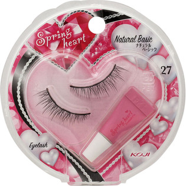

返回列表
产品名称：スプリングハートアイラッシュ２７ナチュラルベーシック

コージー本舗 スプリングハートアイラッシュ２７ナチュラルベーシック ＿
メーカー コージー本舗
JANコード 4972915016574
商品の特徴
アイライン効果：●●●
長さ：●●○
濃さ：●○○
- 成分・分量
- -
- 用法及び用量
- ＜使用方法＞
○アイラッシュのつけ方
1．アイラッシュの目尻側の根元をつまみ、ケースから静かにはずします。
※アイラッシュは右目用・左目用が決まっています。
2．目になじみやすくするためにアイラッシュを10回ほど曲げたり、伸ばしたりします。
3．ご自分の目幅・なりたい目元に合わせてアイラッシュをはさみでカットしてください。
4．接着剤をチューブから少しずつ出し、アイラッシュの根元全体につけます。
5．アイラッシュをご自分のまつげの生え際ギリギリに重ねるようにつけます。
6．アイラッシュを目の中央・目頭・目尻の順に軽くまぶたに押しつけ、ご自分のまつげとなじませてください。
○アイラッシュのはずし方
目尻側からやさしくはずし、根元についた接着剤をとり除いたあと、ケースなどに保管してください。